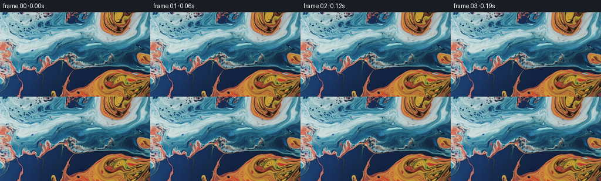

候选 01 · 2026-11-08T23:46:24.043525+00:00 · 点开播放与检查图
inspection.png

transition_check.png

代码变化
--- 上一保存版本
+++ 本次保存版本
@@ -0,0 +1,82 @@
+"""Animate the supplied pigment photograph with a continuous liquid flow.
+
+All texture comes from first_frame.png. The motion is a superposition of
+smooth vortices, sampled along backwards material trajectories. Sampling
+always uses the original photograph, so successive frames do not accumulate
+resampling blur.
+"""
+from pathlib import Path
+import numpy as np
+from PIL import Image
+from scipy.ndimage import map_coordinates, spline_filter
+import artifact_io
+
+ROOT = Path(__file__).resolve().parent
+
+# (centre x, centre y, horizontal radius, vertical radius, circulation)
+# The large eddies follow the large pools of pigment; smaller eddies provide
+# differential motion along the fine fingers between differently colored pools.
+VORTICES = (
+ (198.0, 12.0, 24.0, 30.0, 218.0),
+ (216.0, 139.0, 47.0, 25.0, -310.0),
+ (145.0, 65.0, 48.0, 23.0, 255.0),
+ (33.0, 54.0, 33.0, 30.0, -113.0),
+ (84.0, 9.0, 39.0, 22.0, 115.0),
+ (246.0, 80.0, 13.0, 11.0, -38.0),
+ (77.0, 87.0, 12.0, 11.0, 16.0),
+ (115.0, 77.0, 13.0, 9.0, -19.0),
+ (177.0, 83.0, 17.0, 9.0, 20.0),
+ (17.0, 99.0, 14.0, 17.0, 16.0),
+)
+
+def velocity(x, y):
+ # Curl of a scalar stream function: each Gaussian gives a smooth,
+ # incompressible elliptical vortex, without noisy independent pixel motion.
+ vx = np.zeros_like(x)
+ vy = np.zeros_like(y)
+ for cx, cy, rx, ry, circulation in VORTICES:
+ dx, dy = x-cx, y-cy
+ g = circulation*np.exp(-0.5*((dx/rx)**2+(dy/ry)**2))
+ vx -= g*dy/(ry*ry)
+ vy += g*dx/(rx*rx)
+ # A slow large-scale shearing current carries the tendrils between eddies.
+ vx += 1.15*np.sin(y/32.0 + 0.3)
+ vy += 0.63*np.sin(x/49.0 - 0.8)
+ # Tangential motion continues at the crop edges, but no synthetic outside
+ # texture has to be invented. This is only a narrow peripheral transition.
+ vx *= (1.0-np.exp(-np.maximum(x,0.0)/5.0)) * (1.0-np.exp(-np.maximum(255.0-x,0.0)/5.0))
+ vy *= (1.0-np.exp(-np.maximum(y,0.0)/5.0)) * (1.0-np.exp(-np.maximum(143.0-y,0.0)/5.0))
+ return vx, vy
+
+
+def advance(x, y, dt):
+ # Backwards fourth-order integration of the autonomous material flow.
+ ax, ay = velocity(x,y)
+ bx, by = velocity(x-0.5*dt*ax,y-0.5*dt*ay)
+ cx, cy = velocity(x-0.5*dt*bx,y-0.5*dt*by)
+ dx, dy = velocity(x-dt*cx,y-dt*cy)
+ return x-dt*(ax+2*bx+2*cx+dx)/6, y-dt*(ay+2*by+2*cy+dy)/6
+
+
+def main():
+ original = np.array(Image.open(ROOT/'first_frame.png').convert('RGB'))
+ h, w = original.shape[:2]
+ y, x = np.mgrid[0:h,0:w].astype(np.float64)
+ coeffs = [spline_filter(original[:,:,c].astype(np.float64), order=3, mode='mirror') for c in range(3)]
+ frames = np.empty((81,h,w,3),dtype=np.uint8)
+ frames[0] = original
+ for frame in range(1,81):
+ # The motion is present from the first interval, with a gentle increase
+ # in circulation as the liquid continues to spread.
+ t0, t1 = (frame-1)/16.0, frame/16.0
+ def fluid_time(t):
+ return 0.88*t + 0.12*(t-1.8*(1.0-np.exp(-t/1.8)))
+ dt = (fluid_time(t1)-fluid_time(t0))/2.0
+ for _ in range(2):
+ x, y = advance(x,y,dt)
+ rgb = np.stack([map_coordinates(c,[y,x],order=3,mode='mirror',prefilter=False) for c in coeffs],axis=-1)
+ frames[frame] = np.clip(np.rint(rgb),0,255).astype(np.uint8)
+ artifact_io.save(frames, ROOT)
+
+if __name__ == '__main__':
+ main()
命令 3 · 2026-11-08T23:46:21.017670+00:00/bin/bash -lc "cat > generate.py <<'PY'
\"\"\"Animate the supplied pigment photograph with a continuous liquid flow.
All texture comes from first_frame.png. The motion is a superposition of
smooth vortices, sampled along backwards material trajectories. Sampling
always uses the original photograph, so successive frames do not accumulate
resampling blur.
\"\"\"
from pathlib import Path
import numpy as np
from PIL import Image
from scipy.ndimage import map_coordinates, spline_filter
import artifact_io
ROOT = Path(__file__).resolve().parent
# (centre x, centre y, horizontal radius, vertical radius, circulation)
# The large eddies follow the large pools of pigment; smaller eddies provide
# differential motion along the fine fingers between differently colored pools.
VORTICES = (
(198.0, 12.0, 24.0, 30.0, 218.0),
(216.0, 139.0, 47.0, 25.0, -310.0),
(145.0, 65.0, 48.0, 23.0, 255.0),
(33.0, 54.0, 33.0, 30.0, -113.0),
(84.0, 9.0, 39.0, 22.0, 115.0),
(246.0, 80.0, 13.0, 11.0, -38.0),
(77.0, 87.0, 12.0, 11.0, 16.0),
(115.0, 77.0, 13.0, 9.0, -19.0),
(177.0, 83.0, 17.0, 9.0, 20.0),
(17.0, 99.0, 14.0, 17.0, 16.0),
)
def velocity(x, y):
# Curl of a scalar stream function: each Gaussian gives a smooth,
# incompressible elliptical vortex, without noisy independent pixel motion.
vx = np.zeros_like(x)
vy = np.zeros_like(y)
for cx, cy, rx, ry, circulation in VORTICES:
dx, dy = x-cx, y-cy
g = circulation*np.exp(-0.5*((dx/rx)**2+(dy/ry)**2))
vx -= g*dy/(ry*ry)
vy += g*dx/(rx*rx)
# A slow large-scale shearing current carries the tendrils between eddies.
vx += 1.15*np.sin(y/32.0 + 0.3)
vy += 0.63*np.sin(x/49.0 - 0.8)
# Tangential motion continues at the crop edges, but no synthetic outside
# texture has to be invented. This is only a narrow peripheral transition.
vx *= (1.0-np.exp(-np.maximum(x,0.0)/5.0)) * (1.0-np.exp(-np.maximum(255.0-x,0.0)/5.0))
vy *= (1.0-np.exp(-np.maximum(y,0.0)/5.0)) * (1.0-np.exp(-np.maximum(143.0-y,0.0)/5.0))
return vx, vy
def advance(x, y, dt):
# Backwards fourth-order integration of the autonomous material flow.
ax, ay = velocity(x,y)
bx, by = velocity(x-0.5*dt*ax,y-0.5*dt*ay)
cx, cy = velocity(x-0.5*dt*bx,y-0.5*dt*by)
dx, dy = velocity(x-dt*cx,y-dt*cy)
return x-dt*(ax+2*bx+2*cx+dx)/6, y-dt*(ay+2*by+2*cy+dy)/6
def main():
original = np.array(Image.open(ROOT/'first_frame.png').convert('RGB'))
h, w = original.shape[:2]
y, x = np.mgrid[0:h,0:w].astype(np.float64)
coeffs = [spline_filter(original[:,:,c].astype(np.float64), order=3, mode='mirror') for c in range(3)]
frames = np.empty((81,h,w,3),dtype=np.uint8)
frames[0] = original
for frame in range(1,81):
# The motion is present from the first interval, with a gentle increase
# in circulation as the liquid continues to spread.
t0, t1 = (frame-1)/16.0, frame/16.0
def fluid_time(t):
return 0.88*t + 0.12*(t-1.8*(1.0-np.exp(-t/1.8)))
dt = (fluid_time(t1)-fluid_time(t0))/2.0
for _ in range(2):
x, y = advance(x,y,dt)
rgb = np.stack([map_coordinates(c,[y,x],order=3,mode='mirror',prefilter=False) for c in coeffs],axis=-1)
frames[frame] = np.clip(np.rint(rgb),0,255).astype(np.uint8)
artifact_io.save(frames, ROOT)
if __name__ == '__main__':
main()
PY
OPENBLAS_NUM_THREADS=1 python generate.py"exit 0